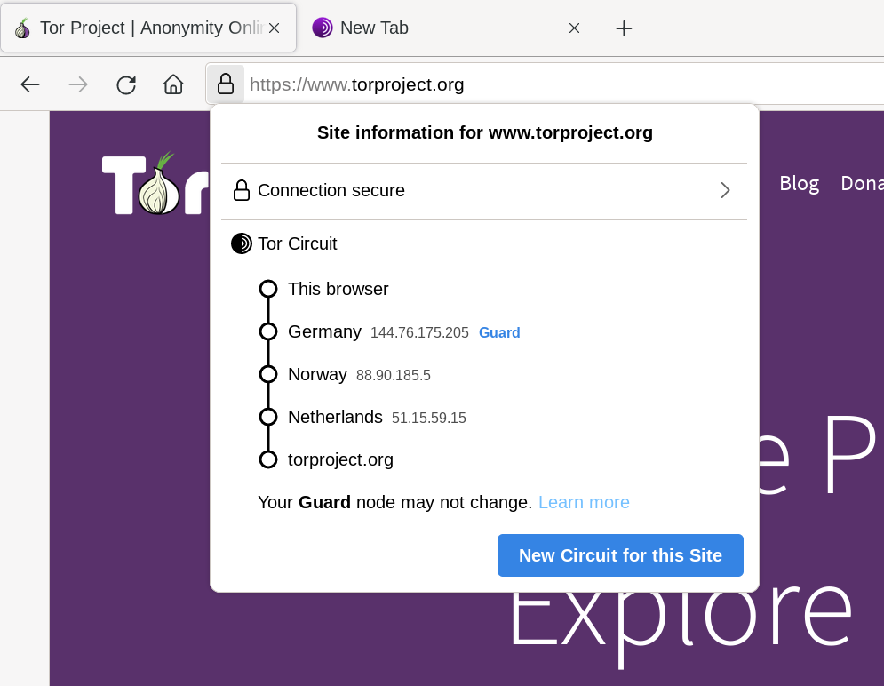

Kai prisijungiate prie internetinės svetainės, informaciją apie jūsų apsilankymą toje svetainėje gali rinkti ne tik tos svetainės operatoriai. Dabar, daugelis internetinių svetainių naudoja daugybę trečiųjų šalių paslaugų, įskaitant socialinių tinklų mygtukus „Patinka“, analizės sekiklius bei reklamos švyturėlius. Visa tai gali susieti jūsų veiklą įvairiose svetainėse.
Naudojimasis Tor tinklu neleidžia stebėtojams atrasti jūsų tikslią buvimo vietą ir IP adresą, tačiau net ir neturėdami šios informacijos jie gali susieti skirtingas jūsų veiklos sritis kartu. Dėl šios priežasties, Tor naršyklėje yra kelios papildomos ypatybės, padedančios jums valdyti, kokia informacija gali būti susieta su jūsų tapatybe.
URL ADRESŲ JUOSTA
Tor Naršyklė sutelkia jūsų internetinį patyrimą į jūsų santykį su internetine svetaine URL adresų juostoje. Net jeigu prisijungsite prie dviejų skirtingų internetinių svetainių, naudojančių tą pačią trečiosios šalies sekimo paslaugą, Tor naršyklė privers pateikti turinį per dvi skirtingas Tor grandines, taigi, sekiklis nežinos, kad abu ryšiai yra užmegzti iš jūsų naršyklės.
Kita vertus, visi ryšiai su vienu internetinės svetainės adresu bus užmegzti per tą pačią Tor grandinę, o tai reiškia, kad galite naršyti skirtingus tos pačios internetinės svetainės puslapius atskirose kortelėse ar languose, neprarasdami jokio funkcionalumo.

URL adresų juostoje, internetinės svetainės informacijos meniu galite matyti Tor Naršyklės esamoje kortelėje naudojamos grandinės schemą.
Grandinėje "Sargybinis" arba įėjimo mazgas yra pirmasis mazgas, kurį automatiškai ir atsitiktinai pasirenka "Tor". Tačiau jis skiriasi nuo kitų grandinės mazgų. Siekiant išvengti profiliavimo atakų, Sargybinis mazgas keičiasi tik po 2-3 mėnesių, skirtingai nuo kitų mazgų, kurie keičiasi su kiekviena nauja sritimi. Norėdami gauti daugiau informacijos apie Sargybinius, apsilankykite DUK ir Palaikymo portale.
PRISIJUNGIMAS PER TOR
Nors Tor Naršyklė yra sukurta taip, kad įgalintų bendrą naudotojo anonimiškumą saityne, gali būti situacijų, kai yra prasminga naudoti Tor su internetinėmis svetainėmis, kurios reikalauja naudotojo vardų, slaptažodžių ar kitos identifikuojančios informacijos.
Jei prisijungiate prie internetinės svetainės naudodami įprastą naršyklę, šiame procese taip pat atskleidžiate ir savo IP adresą bei geografinę buvimo vietą. Tas pats dažnai būna ir siunčiant el. laišką. Prisijungimas prie savo socialinių tinklų ar el. pašto paskyrų, naudojantis Tor Naršykle, leidžia pasirinkti, kurią tiksliai informaciją atskleidžiate naršomoms internetinėms svetainėms. Prisijungimas naudojant Tor Naršyklę taip pat būna naudingas, jei internetinė svetainė, kurioje bandote apsilankyti, yra cenzūruojama jūsų tinkle.
Yra keli dalykai, kuriuos privalote turėti omenyje, kai prisijungiate prie internetinės svetainės naudodamiesi Tor:
- Žiūrėkite saugių ryšių puslapį, kad sužinotumėte svarbią informaciją apie tai, kaip apsaugoti savo ryšį prisijungimų metu.
- Tor Naršyklė dažnai padaro taip, jog atrodo, kad jūsų ryšys yra užmezgiamas iš visai kitos pasaulio vietos. Kai kurios internetinės svetainės, tokios kaip bankų ar el. pašto paslaugų teikėjų, gali tai traktuoti kaip požymį, kad į jūsų paskyrą buvo įsilaužta ar, kad ji yra pavojuje, ir todėl gali jus užblokuoti. Vienintelis būdas kaip tai galima išspręsti - tai atlikti internetinės svetainės rekomenduojamą paskyros atkūrimo procedūrą arba susisiekti su operatoriais ir paaiškinti situaciją.
TAPATYBIŲ IR GRANDINIŲ KEITIMAS

Tor Browser features “New Identity” and “New Tor Circuit for this Site” options. They are also located in the hamburger or main menu (≡).
NAUJA TAPATYBĖ
Šis parametras yra naudingas, jei norite, kad jūsų tolesnė veikla naršyklėje nebūtų susiejama su tuo, ką darėte anksčiau. Pasirinkus šį parametrą, bus užvertos visos jūsų atvertos kortelės ir langai, bus išvalyta visa asmeninė informacija, tokia kaip slapukai ir naršymo žurnalas, ir visiems ryšiams bus naudojama nauja Tor grandinė. Tor Naršyklė jus įspės, kad visa veikla ir atsisiuntimai bus sustabdyti, todėl prieš spustelėdami „Nauja tapatybė“, turėkite visa tai omenyje.
Norint naudoti šį parametrą, reikia, tiesiog, Tor Naršyklės įrankių juostoje spustelėti ant „Nauja tapatybė“.
NAUJA TOR GRANDINĖ ŠIAI SVEITAINEI
Šis parametras naudingas tuo atveju, jei jūsų naudojamas išėjimo retransliavimas negali prisijungti prie jūsų reikalaujamos internetinės svetainės arba, jei netinkamai ją įkelia. Pasirinkus šį parametrą, esamu metu aktyvi kortelė ar langas bus įkeltas iš naujo per naują Tor grandinę. Kitos atviros tos pačios internetinės svetainės kortelės ir langai taip pat naudos naują grandinę, kai tik jie bus įkelti iš naujo. Šis parametras neišvalo jokios privačios informacijos ir neatsieja jūsų veiklos, be to, jis niekaip nepaveikia jūsų esamų ryšių su kitomis internetinėmis svetainėmis.
Šį parametrą taip pat galite rasti URL adresų juostoje, internetinės svetainės informacijos meniu, naujos grandinės rodinyje.